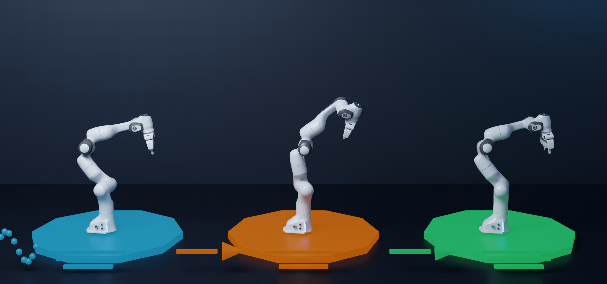
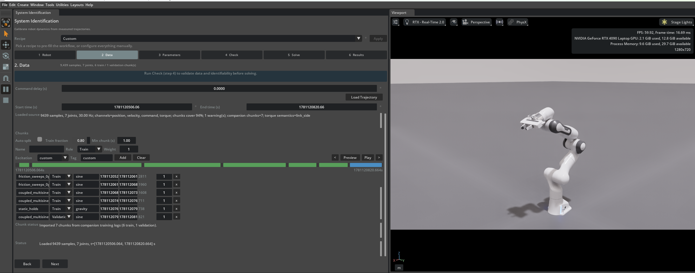

系统辨识扩展#
系统辨识扩展根据记录的运动数据估算机器人仿真参数。当机器人资产在结构上正确，但其仿真的关节运动或力矩响应与参考机器人的测量数据不匹配时，请使用此扩展。


从左到右：激励并记录参考系统，使用初始模型复现运动，然后辨识并验证参数以缩小仿真差距。橙色姿态显示了初始的不匹配；绿色姿态恢复了参考行为。#
系统辨识 UI 默认未启用。打开 Window > Extensions，搜索 system identification，并启用 isaacsim.robot_setup.sysid.ui。交互式扩展会自动启用 isaacsim.robot_setup.sysid 后端。通过 Tools > Robotics > Asset Editors > System Identification 打开该工具。
概述#
系统辨识在仿真中重放记录的指令，将仿真响应与测量的遥测数据进行比较，并调整选定的模型参数以减少残差误差。该扩展提供：
针对机器人、数据、参数空间、预求解检查、求解器和结果的引导式设置。
支持导入 CSV、ROS 2 bag、MCAP 和本地 LeRobot 格式的轨迹数据。
关节状态、力矩和末端执行器姿态残差。
关节驱动、执行器、刚体、惯性、关节限位和指令延迟参数族。
交互式 Isaac Sim PhysX 和独立 Newton MuJoCo 滚动路径。
可导出的无头配置，用于可微分 Newton Featherstone 滚动。
Levenberg-Marquardt、CMA-ES、贝叶斯和 Adam 优化后端。
训练和保留验证数据块、参数灵敏度估计、USD 写回和溯源信息。
可导出的运行规范和用于可重复自动化的无头作业 API。
从概念上讲，求解器搜索参数 \(\theta\) 以最小化测量信号与仿真信号之间差异的加权和：
其中，\(r\) 是启用的残差通道，例如关节位置、速度、力矩、末端执行器姿态或另一个记录的状态信号。参数边界将搜索限制在物理上有意义的区域内。
系统辨识是对 增益调优器 的补充。增益调优器直接评估和编辑关节驱动增益。系统辨识针对记录的轨迹拟合选定的驱动、执行器、惯性和时序参数，并在未参与优化的数据上验证拟合模型。
有关使用记录的 MCAP 运动、测量指令对齐、Newton MuJoCo CMA-ES 滚动和保留验收门控的完整固定基座 Franka 演练，请参阅 教程 14：Franka 的系统辨识。
您可以辨识哪些参数#
仅启用由所选仿真器表示且记录中暴露的参数。
参数族 |
示例 |
有用的激励或测量 |
|---|---|---|
关节驱动和摩擦 |
摩擦、刚度、阻尼、积分增益和电枢惯量。 |
反向运动、不同速度、加速度以及自由空间关节运动。 |
执行器动力学和时序 |
积分增益和执行器指令延迟。 |
快速指令切换、精确的时间戳以及能够暴露有状态控制器行为的运动。 |
刚体质量属性 |
全局或每个连杆的质量、质心和惯性。 |
耦合多关节运动、不同配置、加速度以及测量的力矩。 |
关节限位 |
下限和上限比例。 |
在可用范围附近的缓慢、受监督的运动。 |
多种参数组合可能产生相似的运动。从最小且合理的参数集开始， 对其进行拟合，并仅在 Check 页面报告有用的灵敏度后才进行扩展。 狭窄且具有物理依据的边界比宽泛的边界更有效。
先决条件#
准备以下输入：
从 Window > Extensions 启用
isaacsim.robot_setup.sysid.ui（搜索 system identification）。包含机器人关节结构的 USD 舞台。
机器人 prim 路径，例如
/World/Robot。时间同步的指令和测量的关节位置样本。
用于任何额外残差的关节速度、力矩或末端执行器姿态样本。
一个或多个能够激励被估计参数的轨迹。
尽可能为验证准备一个独立的运动段。
Franka 和双摆教程的教程资源位于 Content Browser 中的
IsaacSim/Samples/SystemIdentification/。打包后的 Franka 教程根目录为
IsaacSim/Samples/SystemIdentification/franka_sysid_tutorial/。在将教程复制到本地或无头模式使用时，请保留其 assets/、config/、
data/ 和 results/ 子目录。
遥测命令必须代表实际到达建模控制器的输入。从共享时钟记录命令和 测量值，或显式测量它们的对齐偏移量。在使用力矩残差之前，请验证力矩的位置、坐标系 和符号约定。
轨迹生成与激励#
此扩展使用记录的轨迹；它不生成激励轨迹。辨识质量更取决于记录中的信息量， 而非优化器迭代次数。如果运动从未暴露参数的影响，则无法恢复该参数。
对于实用的首次记录：
激励与所选参数关联的每个关节。
包含速度和方向的变化，以区分摩擦和阻尼。
在辨识质量和惯性时，包含加速度和耦合的多关节运动。
使用多种幅度或频率，而不是重复单一的工作点。
避免突然的命令不连续和持续饱和。
在物理机器人上，从保守的速度、加速度、力矩和工作空间限制开始。
保留一个独立的轨迹或数据块用于验证，不参与求解。
在准备无头可微分 Featherstone 运行时，使用固定基座或空中运动。
周期性正弦扫频、多正弦信号或平滑样条轨迹是常见的起点，因为您可以控制它们的带宽、幅值、导数以及硬件约束。最佳轨迹不一定是最具挑战性的轨迹，而是最安全的轨迹，它能使所选参数在测量噪声之上具有可区分性。
有关激励设计的更深入探讨，请参阅：
这些资源介绍的是实验设计方法，而非针对特定机器人自动保证安全的轨迹。在硬件执行之前，请根据机器人的关节、速度、加速度、力矩和工作空间约束验证生成的指令。
配方#
使用 Recipe 菜单可预填充常见工作流。应用配方会更改常规控件，但不会将其锁定。以下配方涵盖本页描述的驱动和惯性工作流。
配方 |
预期用途 |
起始求解器 |
|---|---|---|
|
空中摩擦、刚度和阻尼校准。 |
使用 Adam 的无头可微分 Featherstone。 |
|
空中逐连杆质量、质心、惯量及关节驱动标定。 |
使用 Adam 的无头可微分 Featherstone。 |
|
基于驱动和刚体参数的自由空间机械臂辨识。 |
Levenberg-Marquardt 算法。 |
配方仅为起点。UI 可以编辑并导出空中配方所使用的可微分 Featherstone 配置，但它不会执行该 rollout 路径。请通过无头入口点运行导出的规范。确认实际机器人的执行路径、控制器前馈、参数边界、残差信号和输出设置。
辨识工作流#
该窗口使用以下受门控的六页工作流：
Robot \(\rightarrow\) Data \(\rightarrow\) Parameters \(\rightarrow\) Check \(\rightarrow\) Solve \(\rightarrow\) Results
按顺序浏览各页面。后续每个页面都依赖于当前的机器人、遥测数据、参数空间和预检签名。如果这些输入中的任何一项发生变化，请在求解之前重新运行 Check。选中行的数量并非可辨识性结果；请使用当前检查报告中的秩、条件数、灵敏度和逐参数判定结果。


六页工作区将机器人、遥测数据、参数选择、预检、求解和验证结果整合在一个受控的工作流中。#
1. 机器人#
选择机器人关节结构和执行路径。这些选项在运行时主机和 UI 支持方面均有所不同。
物理引擎 |
用途 |
|---|---|
Isaac Sim (PhysX) |
交互式。使用开放的 Isaac Sim 舞台和已编写的 USD 驱动。在求解之前启动时间轴。 |
Newton (MuJoCo) |
交互式或无头模式。运行独立的 Newton 滚动，无需 PhysX 时间轴，并支持无导数或批量候选评估。 |
Newton 可微分 (Featherstone) |
仅限无头模式。UI 可以配置并导出此路径，但执行必须使用无头运行规范。它为其支持的驱动和惯性参数提供精确梯度。 |
高级设置取决于后端。PhysX 克隆控制不适用于独立的 Newton，且 Featherstone 子步不适用于 PhysX 或 Newton MuJoCo。控制器前馈必须与生成录制运动的控制器匹配。
执行主机、物理后端和执行器运行时是独立的运行规范选项。选择 Newton 求解器不会将打开的 PhysX 舞台转换为 Newton。无头工作流可以使用隐式 USD 驱动、显式 Newton 执行器或混合配置。在滚动过程中，每个关节必须有一个控制所有者。
2. 数据#
选择遥测源并点击 Load Trajectory。
源 |
预期输入 |
|---|---|
CSV |
包含时间、指令、测量关节位置，以及可选的速度、力矩或位姿列。 |
ROS 2 bag |
ROS 2 bag 目录或兼容的录制文件，以及主题映射。 |
MCAP |
MCAP 文件以及主题映射。 |
LeRobot |
本地 LeRobot 格式数据集及选定的片段。 |
在激活的环境中，本地 LeRobot 格式的数据摄取需要 PyArrow 24.0.0。CSV、MCAP 和 ROS 2 bag 的数据摄取不需要 PyArrow。
加载后，请确认样本数量、关节数量、采样率、可用通道、时间范围和轨迹预览。映射文件将源特定的主题或列解析为标准信号。
将数据划分为块：
训练块有助于求解器的代价函数。
验证块被保留，并在求解后进行评估。
权重控制训练块的相对贡献。
激励标签按运动类型对验证结果进行分组。
首次尝试时请使用 自动分割。对于单独的扫描、静态保持或其他您希望独立加权和解释的运动，请使用显式块。视口预览可以逐步浏览或播放选定的块。
3. 参数#
仅选择数据可以约束的参数作为 Opt。参数表按关节、连杆和全局范围对值进行分组。每个优化行都有一个初始值以及上下界。
基本表格包含关节摩擦、刚度、阻尼、积分增益、电枢惯量，以及在支持时的全局连杆质量缩放。Additional parameter families 暴露了每个连杆的质量、质心偏移、正定对数 Cholesky 惯量、关节限位缩放以及执行器指令延迟。
仅当您理解参数化方法和模拟器限制时，才使用 Expert bounds。零宽度、非物理或过宽的区间可能导致求解无效或病态。
4. 检查#
在开始优化之前，点击 Run Check。检查报告包括：
缺失、不一致或低质量的遥测数据。
时间戳、采样、指令对齐以及信号质量问题。
控制器前馈不匹配以及可操作的配置建议。
基于所选数据和当前设置的每个参数的可辨识性。
引擎、执行器运行时、残差和参数之间的阻塞性兼容性问题。
在求解之前解决错误。将弱可辨识性判定视为需要更好激励、更严格范围或分阶段求解的请求。更多的迭代无法增加记录中缺失的信息。
检查捕获当前的机器人、数据、数据块、引擎、残差和参数选择。更改这些输入会使结果失效。请重新运行检查。
5. 求解#
首次运行时，将 Optimizer 保持设置为 Auto。
优化器 |
最佳拟合 |
|---|---|
Levenberg-Marquardt |
较小、平滑的最小二乘问题。 |
CMA-ES |
延迟、高维或非平滑搜索。 |
贝叶斯 |
在有限的评估预算下进行昂贵的无导数评估。 |
梯度下降（Adam） |
支持无头可微分的 Featherstone 问题。 |
Auto 根据导出的运行规范进行解析。对于支持的无头 Featherstone 配置，它选择 Adam；对于命令延迟或较大的非平滑参数空间，它倾向于使用 CMA-ES；对于较小的平滑问题，它倾向于使用 Levenberg-Marquardt。
高级求解器设置用于控制迭代和滚动预算、采样、残差权重以及特定于后端的超参数。仅当遥测数据存在且其约定已知时，才为残差赋予非零权重。
在运行前检查 Outputs & stage changes：
Apply optimized parameters to USD 将接受的数值写入当前打开的场景。
Write USD provenance 在关节体上存储
isaac:sysid:*元数据。Export provenance sidecar 将完整的运行上下文写入 JSON。
Pause viewport rendering 在优化期间减少交互式渲染工作量。
Export RunSpec 保存用于无头执行的可复现 JSON 配置。
对于交互式 Isaac Sim PhysX 滚动，启动时间轴，然后单击 Run System ID Optimization。交互式 Newton MuJoCo 滚动不需要 PhysX 时间轴。如果配置选择了 Featherstone，请使用 Export RunSpec 并无头执行它；对于该求解器，交互式运行按钮不是受支持的执行路径。同一按钮可取消当前活动的交互式运行。
6. 结果#
在求解过程中，结果页面会显示进度、每次迭代的成本以及可用的 rollout 比较。 完成后，它会报告：
初始和优化后的参数值。
每个参数的灵敏度范围以及约束判定结果。
活动的残差通道和收敛说明。
关节位置、速度和力矩的比较（如果可用）。
保留验证数据块和激励组的指标。
不要仅根据训练成本选择结果。应优先选择能够改善保留验证性能、在未用于拟合的动作上表现良好，并保持物理上合理的参数值的解决方案。将较宽的灵敏度区间或较弱的约束判定视为不确定性，而非精确测量值。
使用 导出运行报告 将最新的结果摘要写入 JSON。如果按钮不可见，请增加 System Identification 窗口的高度，或滚动到 结果 页面的底部。
使用验证阶梯，而不是单一的通过/失败数值：
已知真值恢复 检查流水线能否从合成遥测数据中恢复注入的参数。这是暴露映射、缩放和参数应用缺陷的最快方法。
记录的保留动作 检查拟合模型是否能在训练数据块之外泛化。
后端和执行一致性 比较应在声明的数值容差内一致的配置，例如捕获和未捕获的 rollout。这是一个独立的实现关卡，并非物理保真度的证据。
任务验证 在代表部署情况的动作和接触上测试已接受的 USD。
低残差可能通过一个层级而在另一个层级失败。有关可复现的已知真值示例，请参阅 教程 15：使用 Sim-to-Sim 恢复验证系统辨识。
重要
在 CUDA 上，默认启用 Newton MuJoCo CUDA 图捕获，这适用于重复的固定形状群体评估。捕获和非捕获的 rollout 都会在恢复初始关节状态之前重置 MuJoCo 的 rollout 局部热启动、执行器激活、施加力和控制缓冲区。由于可能存在微小的 GPU 浮点差异，请使用数值容差而非按位相等来比较这两条路径。对于新的阶段或 RunSpec，请使用相同的参数、轨迹、时间步长和残差通道运行非捕获比较。如果差异超过接受阈值，请禁用捕获。图的创建、有限输出或稳定的重放内存并不能确立一致性。
在包含 16 个候选项和 800 步的参考 Franka 运行中，图重放将中位评估时间从非捕获的 13.59 秒减少到捕获的 0.515 秒，在预热后实现了 26.4 倍的加速。此比率取决于工作负载和硬件；捕获失败会被报告并回退到非捕获执行。
应用并保存结果#
应用优化后的值会更改打开的阶段。保存阶段或预期的物理层以持久化编辑。如果禁用写回，求解和报告仍然有用，且不会修改资产。
对于混合或显式 Newton 执行器工作流，临时的执行器提升发生在会话层。 仅当请求执行器写回时，接受的数值才会复制到根层。取消或清理操作会丢弃临时的会话编辑。
请将运行规范、来源侧车文件、报告、遥测标识和源修订版本保持在一起。 这些记录使得复现拟合结果并解释资产数值的来源成为可能。
无头操作#
无头执行可用于可重复的自动化，并且是可微分 Newton Featherstone 桥接唯一支持的执行路径。UI 仍然适用于选择机器人、加载遥测数据、选择参数、运行预求解检查以及导出运行规范。
该扩展包含专用的命令行工具：
工具 |
用途 |
|---|---|
|
评估当前编写的参数并运行灵敏度分析，而不更改阶段。 |
|
执行导出的 RunSpec 并写入结果、检查点和来源工件。 |
|
在审查后，将选定的结果向量应用到新的 USD 中。输入阶段不会被覆盖。 |
|
将诊断出的命令对齐校正物化为派生的 CSV。 |
|
从已知参数生成合成遥测数据，通过生产管道识别它们，并对恢复情况进行评分。 |
导出 UI 配置并从 Isaac Sim 源代码检出中运行它：
python.bat tools\headless_sysid_solve.py --run-spec my_robot_sysid_run_spec.json
您也可以从主要输入合成运行规范：
python.bat tools\headless_sysid_solve.py `
--robot /World/Robot `
--telemetry data.csv `
--recipe manipulator `
--stage robot.usd
无头集成可以在已经管理 stage 和 runtime 生命周期时调用 isaacsim.robot_setup.sysid.execution.run_sysid()。对于完整的 Kit 托管生命周期，请使用 isaacsim.robot_setup.sysid.headless_job.run_headless_sysid_job()。当自动化客户端向单个持久化 Isaac Sim 进程提交多个序列化作业时，请使用 isaacsim.robot_setup.sysid.job_service.SysIdJobService。
由于 USD 上下文、时间轴和活动物理引擎是进程范围的，因此该服务一次只运行一个作业。
可微分 Featherstone 需要以下运行规范选择：
{
"simulation": {
"engine": "newton",
"newton": {
"solver": "featherstone_diff",
"controller": "pd",
"effort_clamp": "max_effort"
}
},
"solver": {
"optimizer": "gradient_descent"
}
}
以下约束适用于此无头路径：
使用固定基座或空中轨迹。
支持的目标包括关节摩擦、关节刚度、关节阻尼、连杆质量、质心偏移量以及对数 Cholesky 惯性。
关节电枢、执行器命令延迟、积分增益和关节限位缩放不是可微分目标。
桥接器使用映射关节 PD 控制。设置控制器前馈以匹配数据收集期间使用的控制器。
effort_clamp必须为none或max_effort。featherstone_substeps控制积分稳定性，仅适用于此求解器。optimizer: auto为兼容规范选择 Adam；设置gradient_descent可使该选择显式化。独立 rollout 不使用也不需要 PhysX 时间轴。
限制和实用说明#
System Identification 估计所选模型的参数。它不会修复错误的铰接拓扑、关节轴、控制器架构或传感器校准。
远程 LeRobot 数据集下载不属于本地加载器的一部分。
无头可微分 Featherstone 桥接器支持的参数集比无导数路径更窄。
Neural Newton 执行器可以在已创建的情况下执行，但不是可变的系统辨识参数目标。
命令对齐校正和执行器命令延迟是不同的效应，不得重复应用。
大型参数空间通常最好作为分阶段辨识问题来处理。
故障排除#
Solve 已禁用#
加载有效的遥测数据，选择至少一个支持的参数，并运行新的检查。确认机器人 prim 路径解析为 articulation。
成本降低但验证效果变差#
减少参数集，收紧边界，调整残差权重，或收集更多样化的训练数据。这通常表明存在过拟合或耦合参数。
参数约束较弱#
添加一个能暴露该参数的动作，或将其从当前阶段中移除。增加优化器预算并不能创造缺失的激励。
仿真响应在时间上发生偏移#
查看 Check 页面上的命令对齐建议。保持遥测对齐与执行器命令延迟参数分开。
求解器为多个参数找到了边界#
重新考虑边界、残差约定和模型结构。触及边界的结果也可能表明多个参数正在补偿同一误差。
重新打开阶段后应用值消失#
在应用成功结果后保存阶段或目标物理层。会话层更改本身不会持久化。
可微分 Newton 拒绝参数或残差#
确认导出的运行规范正通过无头入口点执行。移除不支持的关节限制、延迟、电枢或积分增益项，使用兼容的空中配方，或选择带有无导数优化器的 Newton MuJoCo。